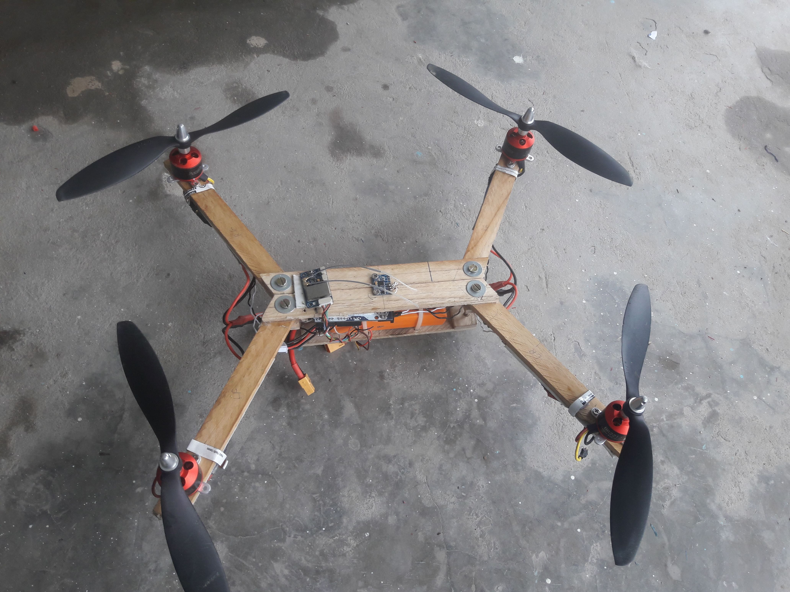

Arduino quadcopter. A first deep build in flight electronics.
Inspired by the film 3 Idiots, I took on my first demanding drone build. Working through the electronics and programming taught me how power, sensors, control code and hardware integration fit together.
ARDUINOQUADCOPTERELECTRONICSPROGRAMMING

Home-built quadcopterOne of the project build stages
The drone in 3 Idiots made me curious about how a quadcopter could be built and controlled. During my bachelor's years I pursued that interest as a hobby project, following Joop Brokking's YMFC-AL learning material to understand the basic electronics and programming.
It was my first challenging project. Building and revisiting the hardware strengthened my knowledge of engineering, robotics and drones.
02 / BUILD RECORD
Frame, wiring, code and bench work.
Early buildAn open frame made wiring and component access visible during integration.Programming and setupController code, transmitter and assembled hardware on the bench.Electronics benchHands-on wiring and component testing during the build.Assembled quadcopterThe completed airframe shown in the supplied project photos.
03 / ENGINEERING LESSONS
A platform for later robotics work.
This build made abstract topics tangible: connecting components correctly, checking power and signal paths, understanding the role of sensors, and working through controller code. Those habits carried into my later mechatronics and drone projects.
Project record: The available photos document construction, programming and bench setup. I have not included a flight-performance claim because no flight test record was supplied.